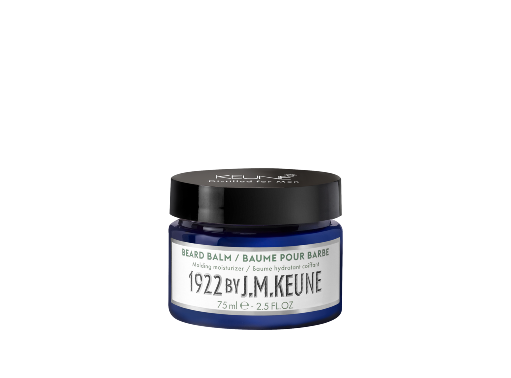

-

Универсальный кондиционер — 1922 Г. JM KEUNE ESSENTIAL CONDITIONER, 50 мл
Кондиционер, обогащённый креатином и коноплей, который укрепляет структуру волоса – это идеальное дополнение к вашему любимому шампуню. Подходит для ежедневного использования для увлажнения волос и бороды.
-

Универсальный шампунь — 1922 BY J.M. KEUNE ESSENTIAL SHAMPOO, 50мл
Essential Shampoo — это все в одном. Шампунь, мытье бороды и мытье тела. Чтобы укрепить, уплотнить и напитать волосы необходимыми питательными веществами, мы смешали креатин, экстракты семян конопли и бамбука. Это идеальный шампунь для сухих волос и кожи головы. Идеально подходит для ежедневного использования.
-
Совершенный крем для бритья — 1922 BY J.M. KEUNE SUPERIOR SHAVING CREAM, 150 мл
Для чистейшего бритья. Бисаболол успокаивает и защищает кожу лица после использования лезвия, глицерин увлажняет даже самую сухую и чувствительную кожу лица. Содержит коноплю.
-
Обновляющий шампунь против перхоти — 1922 Г. JM KEUNE ОЧИЩАЮЩИЙ ШАМПУНЬ, 250 мл
Мягкий шампунь, который успокаивает кожу головы и помогает устранить проблему перхоти. Цинк Пиритион уменьшает действие грибка Маласезия, являющегося причиной образования перхоти. Экстракт семян конопли (конопли) питает волосы питательными веществами, необходимыми для роста и шелковистости, а креатин помогает волосам оставаться крепкими, уменьшая ломкость. Таким образом, вы можете небрежно провести пальцами по здоровой шевелюре, надев стильный черный кашемировый свитер. Кондиционер можно подобрать по вашему желанию.
-

Освежающий шампунь — 1922 BY J.M. KEUNE REFRESHING SHAMPOO, 250 мл
Как начать свой день — со стимулирующего ощущения Освежающего шампуня JM Keune 1922 года. Подходит для всех типов волос, этот шампунь укрепляет и питает волосы с помощью креатина и экстракта семян конопли. Идеально подходит для повседневного использования, когда вы чувствуете потребность в свежести. Мята перечная и ментол стимулируют приток крови к коже головы, а также ощущают потрясающую энергию.
-
Освежающий кондиционер — Keune 1922 by J.M Refreshing Conditioner, 250 мл, 50 мл
Освежающий и укрепляющий кондиционер с дополнительным ароматом Идеально работает с Освежающим шампунем 1922 года от JM Keune. Наш освежающий кондиционер усиливает укрепляющую силу шампуня и создает бодрящие ощущения. Наша формула включает креатин, который уменьшает ломкость волос, которая начинает происходить, когда нам исполняется 30-40 лет. Экстракт семян конопли питает волосы белком и омега-жирными кислотами, необходимыми для поддержания здоровья и увлажнения. Мята и ментол — чтобы разбудить кожу головы и улучшить кровообращение.
-

Первоклассный воск -1922 BY J.M. KEUNE WORLD-CLASS WAX, 75 мл
Универсальный продукт, который можно наносить на сухие волосы для дополнительного контроля или, нанеся немного на сухие волосы, для текстуры и объема, который длится весь день. Конечно, мы заботимся о том, чтобы наша воск сохранял волосы здоровыми, добавляя в них дозу экстракта семян конопли (конопли) для протеина и омеги, а также креатин для укрепления волос. Воск идеально подходит для создания гладких линий на коротких волосах.
-
Премиум глина — 1922 BY J.M. KEUNE PREMIUM CLAY, 75 мл
Сухая глина для укладки с сильным фактором фиксации и матирующим эффектом. Подходит для волос короткой и средней длины для создания текстуры, и разделения прядей. Содержит креатин и коноплю.
-
Классическая помадка — 1922 BY J.M. KEUNE ORIGINAL POMADE, 75 мл
Классическая помада была частью мужского стиля на протяжении десятилетий и лежит в основе многих образов. Наша оригинальная помада очень проста в использовании. Просто начните с небольшого количества, потирая между ладонями — затем добавьте немного больше. Мы добавили экстракт семян конопли (конопли) и креатин, чтобы сохранить волосы здоровыми и сильными. А поскольку наша помада приятная и блестящая, она отлично подходит мужчинам с сухими волосами.
-
Укрепляющий шампунь — 1922 BY J.M. KEUNE FORTIFYING SHAMPOO, 50 мл
Кто не хочет более густые волосы? Нежные, тонкие и тусклые волосы нуждаются в том внимании, которое предлагает наш укрепляющий шампунь. Он не только чувствует прохладу и покалывание — благодаря добавленному нами эвкалипту — он также укрепляет и утолщает волосы креатином и провитамином B5. Витамин Н важен, потому что он укрепляет волосы и предотвращает их выпадение. Экстракт семян конопли (конопли) — тоже входит в состав питательной смеси, поскольку содержит белок, необходимый для роста волос.
-
Очищающий шампунь — 1922 BY J.M. KEUNE DEEP-CLEANSING SHAMPOO, 50 мл
Этот шампунь глубоко и деликатно очищает кожу, удаляет накопленность стайлинга. Шампунь безопасно очищает волосы, одновременно увлажняя и укрепляя их. Отлично подходит для всех типов волос, но мы особенно рекомендуем этот шампунь для жирных волос и кожи головы. Содержит креатин, коноплю и экстракт бамбука. Кондиционер можно подобрать по вашему желанию.
-
Твердий Шампунь — 1922 BY J.M. KEUNE SHAMPOO STICK, 75 мл
Кто сказал, что шампунь должен быть в бутылке? Для парней в пути — или тех, кто не хочет иметь дело с бутылками — мы разработали наш удобный Shampoo Stick. Это твердый шампунь, которы делает свою работу. Просто бросьте Шампунь в свою сумку, и вы готовы к путешествию. Даже служба безопасности авиалиний не будет беспокоить вас. Мы добавили провитамин B5 в эту мягкую формулу, чтобы волосы (и борода) получили питание и увлажнение.
-
Масло для бороды — 1922 BY J.M. KEUNE BEARD OIL, 50 мл
Масло для бороды Keune 1922 Beard Oil — продукт из роскошной смеси масел: масло сладкого миндаля смягчает, увлажняет и придает натуральный блеск. Идеально для оформления бороды. Активные ингредиенты: масло абрикоса, масло авокадо, масло сладкого миндаля, экстракт конопли.
-

Бальзам для бороди — 1922 BY J.M. KEUNE BEARD BALM, 75 мл
Наш Бальзам для бороды позволяет ухаживать и питать бороды всех форм и размеров, с пчелиным воском для естественного блеска легкой фиксации. Поскольку мы являемся экспертами по уходу за волосами, мы знаем, как относиться к бороде, как к королевской семье — с маслом конопли (конопля) и маслом ши, для питания бороды. Масло авокадо и сладкого миндаля увлажняет бороду и заботится о коже под ней.
-
Камуфляжная пудра KEUNE, 6 мл
Небольшое количество этого порошка на сухие волосы создает объем с легкой, рыхлой текстурой. Волосы кажутся плотнее и гуще. А поскольку Tinted Dust имеет светло-коричневый цвет, волосы тоже выглядят гуще. У пудры есть насадка, которая направляет порошок прямо в корни, чтобы сделать их более полными и густыми, там где вы хотите.
-
Классический гель — 1922 BY J.M. KEUNE Gel, 150 мл
Гель с максимально сильным фактором фиксации и блеска. Подходит для создания эффекта мокрых волос, плотно фиксирует заданную форму. Рекомендован для волос короткой и средней длины. Содержит креатин и коноплю.
-

Премьер паста — 1922 BY J.M. KEUNE PREMIER PASTE, 75 мл
Паста со сверх-сильным фактором фиксации и матирующим эффектом для быстрых, не требующих усилий укладок. Насыщен креатином для укрепления волос, экстрактом семян конопли (конопли) для добавления белка и омега, которые любят волосы. Для коротких и средних волос.
-
Укрепляющий лосьон — Keune 1922 by J.M Lotion, 75 мл
Увеличение роста волос всего за 4 дня. Мы вложили свой многолетний опыт и научные знания в создание лосьона для ухода, который фактически продлевает жизненный цикл волос. Укрепляющий лосьон с 1922 года от JM Keune является двигателем роста волос. Липосомы значительно увеличивают рост волос — на 25% всего за 4 дня. Витамин Н (биотин) укрепляет структуру волос, поэтому они не ломаются и не выпадают. Кроме того, есть экстракт корня красного женьшеня, способствующий росту волос, стимулирующий экстракт эвкалипта и стимулирующий кофеин, чтобы разбудить корни волос. Попрощайтесь с нежными, тонкими и тусклыми волосами.
-
Формирующий крем MATTE MEASURE KEUNE, 75 мл
Формирующий крем со средней фиксацией и матовым эффектом. Создать текстурированный вид. Идеально подходит для рестайлинга в течение дня.
-
Уплотняющий спрей KEUNE, 250 мл
Уплотняющий спрей Tough Texture отлично подходит для длинных и коротких волос, его можно наносить на влажные волосы. После высыхания, нанесите его еще раз для большего разделения прядей. В спрей добавлен креатин для укрепления волос. В особенности он подходит при работе с тонкими волосами для создания текстуры.